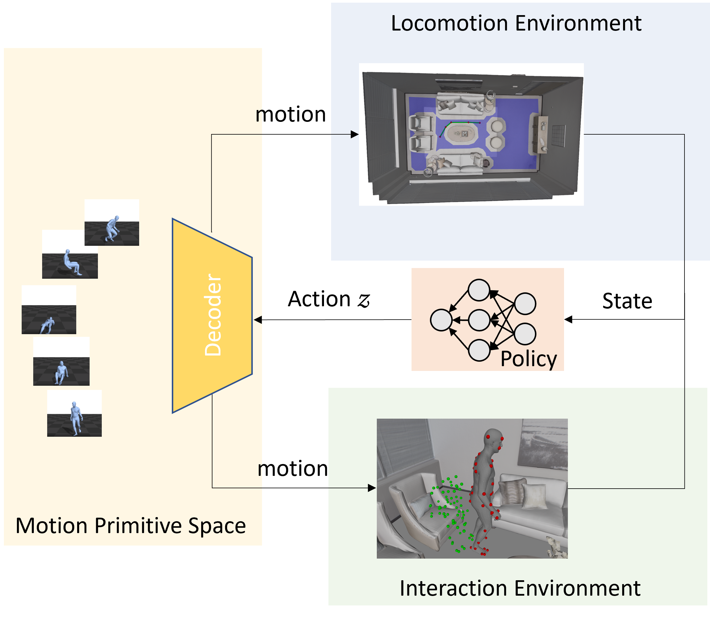
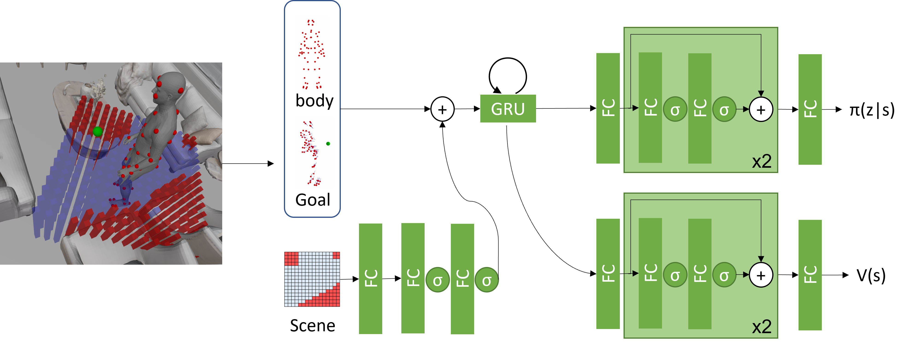
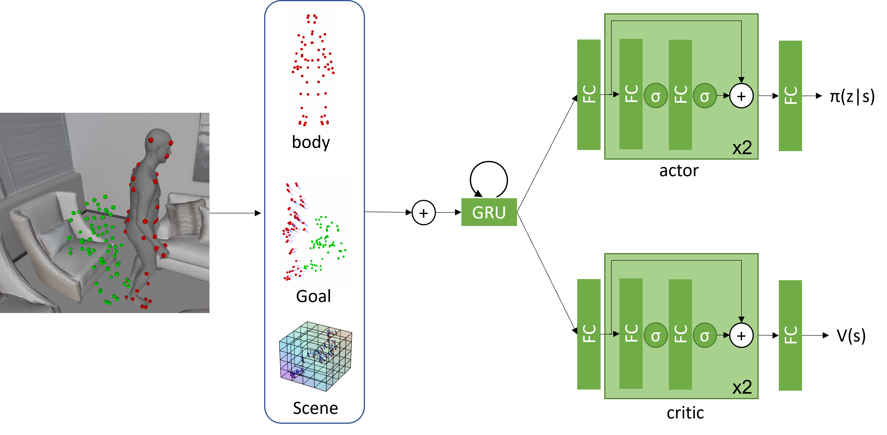

Overview
Interaction with environments is one core ability of virtual humans and remains a challenging problem. We propose a method capable of generating a sequence of natural interaction events in real cluttered scenes as illustrated in this figure. The human first walks to sit on a stool (yellow to red), then walk to another chair to sit down (red to magenta), and finally walk to and lie on the sofa (magenta to blue).

Method
We formulate synthesizing human behaviors in 3D scenes as a Markov decision process with a latent action space, which is learned from motion capture datasets.
We train scene interaction-aware and goal-driven agent policies to synthesize various human behaviors in indoor scenes including wandering in the room, sitting or lying on an object, and sequential combinations of these actions.

Illustration of our proposed human-scene interaction synthesis framework, which consists of motion model learning, policy learning, and tree-based search for test-time optimization. Combing off-the-shelf path finding methods and static person-scene interaction generation methods, we can synthesize realistic inhabiting behavior of virutal humans with fine-grained control.

Illustration of the locomotion policy design.

Illustration of the object interaction policy design.
Video Results
Our method generalize to novel objects and real world scenes.
Sitting on a novel chair with unique shape and low height.
Walking to sit on a bus stop bench in a Paris street point cloud from Paris-CARLA-3D.
Walking to sit on a bed in a reconstructed room from PROX.
Comparison with more related works.